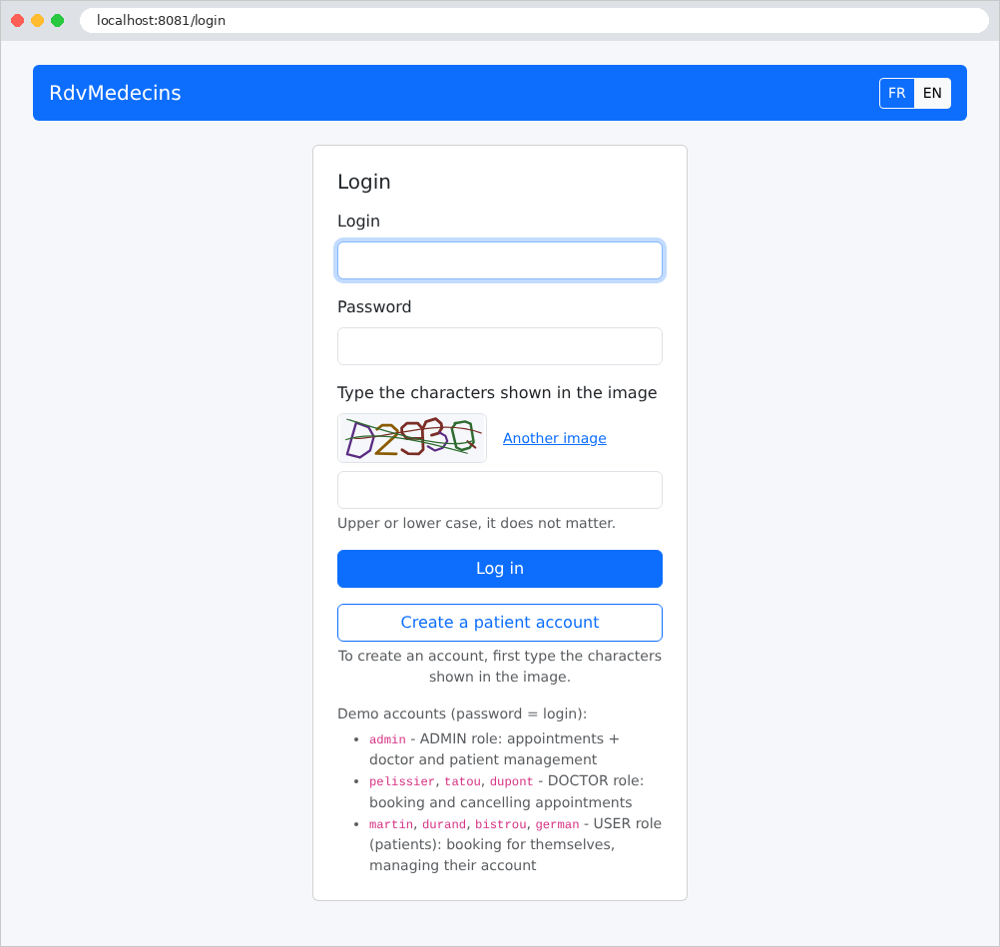

1. Introdução
O PDF do documento está |AQUI|.
Os códigos do documento estão |AQUI|.
Este documento é um produto da IA Claude, da Anthropic. Ele segue o documento “Introdução passo a passo ao framework web [Flask]” (2026), que por sua vez seguiu os documentos “Introdução passo a passo ao framework web [Spring MVC]”, “Introdução passo a passo ao framework web [ASP.NET Core MVC]” e “Introdução passo a passo ao framework web [NestJS]” (2026). Este documento adapta o curso [Flask] ao ambiente [PHP]:
- o framework [Flask] e a linguagem [Python] são substituídos pelo framework [Laravel] 13 e pela linguagem [PHP] (versão 8.4 ou posterior);
- as views [Jinja2] são substituídas pelas views [Blade], o engine de views do [Laravel];
- a validação por [Pydantic] e [WTForms] é substituída pela do [Laravel]: regras de validação e requisições de formulário ([FormRequest]);
- As poucas dezenas de linhas de código de segurança escritas à mão do [Flask] são substituídas pelo sistema de autenticação do [Laravel] (guards, middleware, [Gate], fachada [Hash], limitador de tentativas), complementado pela biblioteca [firebase/php-jwt] para tokens JWT;
- O ORM [SQLAlchemy] é substituído pelo ORM do [Laravel], o [Eloquent], sempre baseado no [MySQL].
O documento segue de perto a estrutura do curso [Flask]: primeiro, numerosos pequenos projetos, cada um centrado em um conceito específico, seguidos de um estudo de caso completo — uma aplicação web de agendamento de consultas em um consultório médico — com todos os arquivos integralmente comentados. Os exemplos têm os mesmos números e abordam os mesmos temas que nos cursos [Flask], [Spring MVC] e [ASP.NET Core MVC]: quem conhece qualquer um deles pode comparar os frameworks exemplo por exemplo. Isso, porém, não é necessário: este documento é autossuficiente e não pressupõe nenhum conhecimento prévio desses frameworks. Os únicos pré-requisitos são noções básicas de programação web (o protocolo HTTP, a linguagem HTML) e os fundamentos da linguagem [PHP] (variáveis, arrays, funções, classes). O curso “Introdução à linguagem PHP7 por meio de exemplos” (2019) apresenta a própria linguagem a quem precisa aprendê-la primeiro; as novidades do [PHP] 8 usadas aqui (propriedades promovidas, classes [readonly], enumerações, argumentos nomeados, operador nullsafe etc.) são explicadas quando aparecem pela primeira vez.
1.1. O papel do Laravel em uma aplicação web
Uma aplicação web costuma ser construída em camadas, cada uma se comunicando apenas com as camadas vizinhas:

- a camada web recebe as requisições HTTP do navegador e devolve a ele páginas HTML. É a camada que o [Laravel] nos ajuda a escrever;
- a camada de negócio contém as regras de negócio da aplicação (por exemplo, “um paciente só pode ter uma consulta futura”). Ela nada sabe sobre a web: poderia igualmente atender a uma aplicação de linha de comando;
- a camada de acesso a dados (camada DAO, de *Data Access Object*) lê e grava no banco de dados. Usaremos o [Eloquent], o ORM (*Object Relational Mapper*) do [Laravel], que mapeia linhas de tabelas em objetos [PHP].
A própria camada web segue o padrão MVC (*Model-View-Controller*):
- o controller (C) é uma classe [PHP] cujos métodos, chamados de actions, tratam cada um um tipo específico de requisição (por exemplo, [GET /schedule]). Uma action lê os parâmetros da requisição, processa-a por meio da camada de negócio e em seguida escolhe a view a exibir;
- o modelo (M) é o conjunto de dados que a action passa para a view;
- a view (V) é um arquivo [Blade] (extensão [.blade.php]): uma página HTML que contém expressões [{{ ... }}] e diretivas [@if], [@foreach]..., que o engine [Blade] substitui por dados do modelo.
Uma observação sobre a terminologia, para evitar confusão: no [Laravel], a palavra “model” (*modelo*) geralmente designa um modelo [Eloquent], uma classe que representa uma tabela do banco de dados (arquivo em [app/Models]). Este documento usa a palavra nos dois sentidos, especificando a cada vez qual deles é o pretendido: o modelo da view (os dados passados a uma view) e o modelo [Eloquent] (conforme tratado no capítulo sobre acesso a dados). A palavra “template” designa a view comum da qual as outras páginas herdam (capítulo sobre views).
O processamento de uma requisição segue as etapas numeradas do diagrama:
- 1: O navegador envia uma requisição HTTP, por exemplo, [GET /schedule?doctorId=1&day=2026-09-26];
- 2: O servidor web recebe a requisição e a repassa à aplicação [Laravel] por meio do arquivo [public/index.php]. Durante o desenvolvimento, esse servidor é o que acompanha o [PHP], iniciado pelo comando [php artisan serve]; em produção, será um servidor como [nginx] ou [Apache], associado ao [PHP-FPM]. A requisição passa por middleware — classes que tratam todas as requisições (cookies, sessões, segurança etc.) — e então o [Laravel] compara o caminho solicitado com as rotas da aplicação e seleciona a action responsável por tratá-la: é o roteamento;
- 3: A action solicita à camada de negócio os dados de que precisa; se necessário, a camada de negócio aciona a camada DAO, que consulta o banco de dados [MySQL] via SQL;
- 4: A action monta o modelo M da view e instrui o engine [Blade] a gerar a página (função [view]);
- 5: A página HTML gerada pela view é a resposta da action, que o [Laravel] devolve ao navegador.
[Laravel] é, de longe, o framework web mais utilizado do mundo [PHP], à frente do [Symfony] (em cujos componentes, aliás, ele se baseia). Gratuito e de código aberto, criado em 2011 por Taylor Otwell, funciona em qualquer lugar onde o [PHP] funcione ([Windows], [Linux], [macOS]), e o [PHP] funciona com quase todos os provedores de hospedagem. É um framework completo: roteamento, views, validação, sessões, cache, autenticação, tradução, acesso a banco de dados, envio de e-mails, tarefas em segundo plano... tudo é fornecido e pensado para funcionar em conjunto. É o oposto do microframework [Flask] do curso anterior, que deixava ao desenvolvedor a tarefa de montar seus próprios componentes: o [Laravel] faz muita coisa sozinho, com pouquíssimo código, e um dos objetivos deste documento é revelar o que acontece “nos bastidores”. [Laravel] pode criar servidores que devolvem JSON a um cliente ([JavaScript], [Angular], [React], [Vue.js], [Flutter]...) bem como aplicações web tradicionais, em que o servidor gera as páginas HTML e o navegador apenas as exibe. É esse segundo caso de uso que este documento examina.
Uma particularidade do [PHP] explica muita coisa sobre o [Laravel]: a aplicação é reconstruída a cada requisição e depois descartada (Exemplo 01). Voltaremos a esse ponto com frequência.
1.2. Ferramentas utilizadas
Os exemplos foram escritos e testados com as seguintes ferramentas (as instruções de instalação estão no apêndice):
- [PHP] 8.4 (qualquer versão 8.4 ou posterior serve), com as extensões [intl], [mbstring], [openssl], e [pdo_mysql];
- [Composer] 2, o gerenciador de bibliotecas do [PHP];
- o editor [Visual Studio Code], com as extensões [PHP Intelephense] (análise de código) e [Laravel] (views [Blade]);
- um navegador recente ([Chrome], [Firefox], [Edge]);
- a ferramenta de linha de comando [curl], que exibe as respostas HTTP brutas (ela acompanha o [Windows] 10 e 11);
- o SGBD [MySQL] (ou [MariaDB]), por exemplo, o do [Laragon] no [Windows], a partir do capítulo sobre acesso a dados e para o estudo de caso. No [Windows], o [Laragon] instala o [PHP], o [Composer], e o [MySQL] de uma só vez.
[Laravel] e as outras bibliotecas não fazem parte do [PHP]: o [Composer] as baixa do repositório [Packagist] durante a instalação (por isso é preciso estar conectado à Internet nesse dia) e as coloca em uma pasta [vendor]. Cada projeto descreve suas bibliotecas em um arquivo [composer.json]. A tabela a seguir lista as principais, com as versões utilizadas:
[laravel/framework] | o framework: roteamento, middleware, controllers, views ([Blade]), validação, sessão, cache, autenticação, tradução, [Eloquent]... | 13.33.0 |
[symfony/*] | os componentes do [Symfony] sobre os quais o [Laravel] é construído (requisições e respostas HTTP, roteamento, console), instalados junto com ele | 8.1 |
[nesbot/carbon] | datas (por exemplo, 12), instalada com o [Laravel] | 3.14.0 |
[brick/math] | números decimais exatos (exemplo 06), instalado com o [Laravel] | 1.0.0 |
[firebase/php-jwt] | tokens JWT (seção sobre autenticação) | 7.2.0 |
[Laravel] normalmente é instalado criando-se um projeto completo com o comando:
[Composer] baixa então o esqueleto de uma aplicação [Laravel] (cerca de cinquenta arquivos e pastas: configuração, service providers, migrações, testes, ferramentas de build [JavaScript]...), depois suas bibliotecas, e cria uma chave de criptografia. É assim que se inicia um projeto real. Para fins de aprendizado, esse esqueleto tem um inconveniente: contém muitos arquivos cuja finalidade você ainda não entende. Os exemplos deste documento começam, portanto, pela outra ponta: o Exemplo 01 é a menor aplicação [Laravel] possível, e cada exemplo acrescenta apenas os arquivos de que precisa. O estudo de caso final tem a estrutura de uma aplicação [Laravel] padrão.
1.3. Executando o estudo de caso
1.3.1. Instalação do Laragon
O estudo de caso requer um SGBD, o MySQL, um interpretador PHP e o instalador de pacotes do PHP, [composer]. O Laragon pode fornecer tudo isso e muito mais. Em setembro de 2026, o Laragon está disponível na URL [Download Laragon – Fast & Modern Dev Environment ]. O Laragon vem com ferramentas que permitem instalar um servidor PHP e o SGBD [MySQL]:

- em [1], um servidor web Apache;
- em [2], o SGBD e o [MySQL];
- em [3], uma ferramenta de mensagens que não usaremos;
- [4] inicia todos os serviços (Apache, [MySQL], MailPit);
- [5] exibe a página web da URL [http://localhost]. Por padrão, essa URL remete à pasta <laragon-install>\www, em que <laragon-install> é a pasta de instalação do Laragon;
- em [6], inicia a ferramenta HeidiSQL, que permite gerenciar bancos de dados MySQL. Usaremos essa ferramenta para criar o banco de dados usado pela aplicação RdvMedecins;
- Em [7], abre um terminal; todos os binários necessários ao Laragon estão no PATH;
- Em [8], abre uma janela do Windows Explorer na pasta associada à URL [http://localhost];
A pasta de instalação do Laragon contém os seguintes itens:
 |
- Em [1], a pasta [bin] contém numerosos aplicativos:
 |
- Em [1], o servidor web Apache;
- em [2], um terminal de linha de comando;
- em [3], um cliente [git] que permite gerenciar as diferentes versões de um projeto;
- em [4], um gerenciador de banco de dados;
- em [5], um gerenciador de e-mails;
- em [6], o SGBD e o [MySQL];
- [7], outro servidor web;
- em [8], o [node.js] para executar scripts JavaScript;
- [9], um editor de texto;
- [10], o interpretador PHP;
- [11], o interpretador [Python];
- [12], um servidor de cache;
O Laragon vem com um ambiente de desenvolvimento completo. Neste curso, usaremos:
- o SGBD, [MySQL], [6] e a ferramenta [heidisql] de gerenciamento gráfico;
- o interpretador PHP 8.5;
- o instalador de pacotes [composer];
O README do estudo de caso indica que é preciso digitar os seguintes comandos em um terminal:
para instalar os pacotes PHP necessários aos exemplos e ao estudo de caso.
para executar um dos exemplos ou o estudo de caso. Se você usar um terminal [PowerShell] no VSCode, encontrará o seguinte problema: nem [composer] nem [php] estão presentes no diretório PATH da máquina Windows após a instalação do Laragon. Esses comandos, portanto, não serão reconhecidos em um terminal do VSCode.
Para incluir [composer] e [php] no PATH da máquina Windows, abra um terminal PowerShell no modo [administrator] e digite os seguintes comandos:
[Environment]::SetEnvironmentVariable("Path",[Environment]::GetEnvironmentVariable("Path", "Machine") + ";C:\laragon\bin\composer","Machine")
[Environment]::SetEnvironmentVariable("Path",[Environment]::GetEnvironmentVariable("Path", "Machine") + ";C:\laragon\bin\php\php-8.5.11-nts-Win32-vs17-x64","Machine")
Ajuste os dois caminhos destacados ao seu ambiente.
Será preciso reiniciar o VSCode para que essas alterações tenham efeito.
Para criar o banco de dados [MySQL] necessário ao estudo de caso, proceda da seguinte forma:
 |
- Em [1], todos os serviços devem estar iniciados;
- em [2], a opção [Database] permite gerenciar o banco de dados;
A opção [Database] inicia um utilitário chamado HeidiSQL:
 |
- Em [1], você pode selecionar diversas opções de SGBD. O valor padrão fornecido é SGBD MySQL. Isso é aceitável;
- em [2], você se conecta ao HeidiSQL;
 |  |
- Em [1-2], execute o arquivo SQL e depois selecione o arquivo [dbrdvmedecins2.sql], que você encontrará na pasta [laravel-sept-2026/rdvmedecins2-laravel/database]:

A execução do arquivo [3] criará o banco de dados [dbrdvmedecins2] usado pelo estudo de caso. Para vê-lo, execute F5 no HeidiSQL para atualizar a exibição:
Nota do editor: As capturas de tela a seguir mostram um banco de dados chamado [dbrdvmedecins], enquanto o banco do estudo de caso se chama [dbrdvmedecins2]. Os dois bancos são praticamente idênticos, por isso julgamos desnecessário refazer as capturas.
Fim da nota

O banco de dados [dbrdvmedecins] foi criado. Eis o seu conteúdo:

- em [1-3], a tabela [clients];
- [id] é a chave primária da tabela;
- [version] é o número de versão da linha. Esse número é incrementado a cada modificação da linha;
- [titre, nom, prenom] identificam a pessoa;

- em [1-3], a tabela [medecins];
- [id] é a chave primária da tabela;
- [version] é o número de versão da linha;
- [titre, nom, prenom] identificam a pessoa;

- Em [1-3], a tabela dos horários de consulta dos médicos:
- [id]: chave primária;
- [version]: número de versão da linha;
- [id-medecin]: chave estrangeira que referencia a chave primária do médico;
- [hdebut, mdebut]: hora e minutos do início da consulta. Assim, [8,20] significa 8h20.
- [hfin, mfin]: hora e minutos do fim da consulta.

- Em [1-3], a tabela [rv] das consultas agendadas;
- [id]: chave primária;
- [version]: número de versão;
- [jour]: data da consulta;
- [id_creneau]: chave estrangeira que referencia a chave primária do horário de consulta. Como um horário está vinculado a um médico, sabemos qual médico atenderá essa consulta;
- [id_client]: chave estrangeira para o número (chave primária) do paciente que comparece à consulta;

- em [1-3], a tabela [users] lista os usuários autorizados a usar a aplicação;
- [id, version]: chave primária, número de versão;
- [login, password]: credenciais do usuário;
- [nom]: nome do usuário;
- [role]: o papel do usuário. [ADMIN] tem todos os direitos de acesso. [USER] tem acesso somente de leitura. Esse usuário pode ver a agenda de um médico, mas não pode marcar nem cancelar uma consulta;
1.3.2. Executando o estudo de caso
Nota do revisor: Aconselho o leitor a executar imediatamente o estudo de caso conforme descrito a seguir. Depois de entender bem a finalidade dessa aplicação de agendamento de consultas, peça à sua IA favorita que modifique a aplicação da seguinte forma: de agora em diante, cada médico poderá:
- definir seus próprios horários de consulta entre duas datas. Isso permitirá que ajustem a agenda conforme necessário;
- retirar certos horários da agenda em um determinado dia — por exemplo, se estiverem indisponíveis por motivos pessoais;
A modificação não é trivial, pois envolve uma alteração na estrutura do banco de dados. Peça à IA que lhe forneça o novo código da aplicação e o script SQL para criar o novo banco de dados. Para isso, você precisará fornecer a ela o arquivo ZIP com o projeto completo, bem como o script SQL do banco de dados antigo.
Além disso, não revisei o curso criado pelo Claude. Ele já havia produzido os cursos [NestJS], [ASP.NET Core MVC], [Spring MVC] e [Flask], todos perfeitos. Presumi que o mesmo valesse para este. Se você tiver dificuldade para entender algo, a solução é sempre a mesma: peça à sua IA favorita que explique o que você não entendeu. O Claude, por exemplo, é muito bom nisso. Talvez seja preciso fazer o “upload” do exemplo que você não entende para ele.
Fim da nota.
O estudo de caso no final deste documento é uma aplicação completa. Os leitores provavelmente vão querer vê-la em funcionamento antes de mergulhar nos detalhes do framework: veja como executá-la. Ela está na pasta [rdvmedecins2-laravel], ao lado da pasta [examples]:
É preciso ter instalado o [PHP] (versão 8.4 ou posterior), o [Composer], o [Visual Studio Code], e o [MySQL] (veja os apêndices). Depois:
- Crie o banco de dados [dbrdvmedecins2] executando o script [rdvmedecins2-laravel/database/dbrdvmedecins2.sql]. Com o [Laragon], abra a ferramenta [HeidiSQL] (botão Database) e execute o script pelo menu File / Run SQL. Na linha de comando, a partir da pasta [rdvmedecins2-laravel]:
- Abra a pasta [rdvmedecins2-laravel] no [Visual Studio Code] (menu File / Open Folder) e, em seguida, abra um terminal (menu Terminal / New Terminal);
- Instale as bibliotecas da aplicação: o [Composer] lê o arquivo [composer.json], baixa o [Laravel] e as demais bibliotecas e as coloca na pasta [vendor] da aplicação (leva algumas dezenas de segundos):
- Verifique a conexão com o banco de dados. A aplicação se conecta ao [MySQL] em [127.0.0.1], porta 3306, com o usuário [root] sem senha (a configuração padrão do [Laragon]). Se a conta [root] tiver senha, informe-a no arquivo [.env] da aplicação, na linha [DB_PASSWORD=] (por exemplo, [DB_PASSWORD=myPassword]);
- Execute a aplicação:
- [Laravel] exibe:
O servidor de desenvolvimento escuta na porta 8081, no endereço [127.0.0.1] (ou seja, [localhost]). Cada requisição recebida será registrada no console, junto com os comandos SQL que ela envia ao banco de dados;
- Abra o endereço [http://localhost:8081] em um navegador:

- Faça login com uma das contas de demonstração, cuja senha é igual ao nome de usuário: [admin] (administrador), [pelissier], [tatou], [dupont] (médicos), [martin], [durand], [bistrou], [german] (pacientes). Também é preciso digitar os caracteres da imagem, em maiúsculas ou minúsculas.
Uma aplicação [PHP] não lê o banco de dados na inicialização: um erro de conexão só aparece na primeira página que consulta o banco — isto é, no momento da conexão. O [Laravel] exibe então sua página de depuração e registra o erro no arquivo [storage/logs/laravel.log]. Se a mensagem for [SQLSTATE[HY000] [2002] Connection refused], significa que o [MySQL] não foi iniciado; com [[1045] Access denied for user 'root'@'localhost'], significa que a senha está incorreta; com [[1049] Unknown database 'dbrdvmedecins2'], significa que o script SQL não foi executado; com [could not find driver], que a extensão [pdo_mysql] do [PHP] não está habilitada. Se o próprio comando [php artisan serve] falhar com a mensagem [Failed opening required '.../vendor/autoload.php'], significa que o comando [composer install] não foi executado; com [Failed to listen on 127.0.0.1:8081 (reason: Address already in use)], significa que a porta 8081 já está em uso (por outra versão da aplicação, por exemplo). O arquivo [README.md] da aplicação descreve outros cenários. Pare a aplicação com [Ctrl-C] no terminal.
O estudo de caso no final do documento descreve como usar a aplicação e depois explica cada um de seus arquivos.
1.4. Exemplos
Os exemplos ficam na pasta [examples], com uma subpasta por exemplo:
Cada exemplo é uma pequena aplicação ([Laravel]) que funciona sozinha. Todos os exemplos usam as mesmas bibliotecas, descritas no arquivo [examples/composer.json]:
- Linhas 6–12: o que os exemplos exigem: [PHP] 8.4 ou posterior, as extensões [intl] (formatação de números conforme o idioma, Exemplo 16) e [pdo_mysql] (acesso ao [MySQL], exemplo 28), o [Laravel], e a biblioteca [firebase/php-jwt] (os tokens JWT, exemplo 25). [^13.33] significa “versão 13.33 ou uma versão mais recente da versão principal 13”;
- as demais linhas configuram o comportamento do [Composer]: o carregador de classes é otimizado, as bibliotecas são ordenadas por nome e somente versões estáveis são aceitas.
Para executar os exemplos, primeiro instale suas bibliotecas — uma única vez — em uma janela de terminal aberta na pasta [examples]:
[Composer] cria a pasta [examples/vendor], compartilhada por todos os 28 exemplos, e o arquivo [composer.lock], que registra as versões exatas instaladas (veja o estudo de caso). A pasta [common] contém o framework CSS [Bootstrap] ([common/bootstrap]), compartilhado pelos exemplos que formatam suas páginas (a partir do Exemplo 15), e a rota que o serve ([common/bootstrap.php]; veja o Exemplo 15).
Quase todos os exemplos têm a mesma estrutura — a de uma aplicação [Laravel] padrão, reduzida ao essencial. Por exemplo, a do Exemplo 13:
- [public/index.php]: o ponto de entrada de todas as requisições; [bootstrap/app.php]: a estrutura da aplicação; [artisan]: a ferramenta de linha de comando do [Laravel] (Exemplo 01);
- [routes/web.php]: as rotas, que associam URLs a actions (Exemplo 02);
- [app]: as classes da aplicação: controllers ([app/Http/Controllers]), modelos, serviços...;
- [resources/views]: as views [Blade] (a partir do capítulo sobre views);
- [.env]: configurações específicas do exemplo (Exemplo 01); [storage] e [bootstrap/cache]: os arquivos que o [Laravel] grava por conta própria (views compiladas, cache, sessões, log).
Para executar um exemplo, abra um terminal em sua pasta (no [Visual Studio Code]: clique com o botão direito na pasta do exemplo e selecione “Abrir no terminal integrado”) e digite:
Todos os exemplos escutam na porta 8000: só é possível executar um por vez (ou é preciso mudar a porta: [php artisan serve --port=8001]). Pare o servidor digitando [Ctrl-C] no terminal. Não é necessário reiniciar o servidor após modificar um arquivo [PHP] ou uma view: a alteração passa a valer na requisição seguinte (exemplo 01).
Ao abrir a pasta [examples] no [Visual Studio Code], a extensão [PHP Intelephense] analisa todos os arquivos, inclusive os do [Laravel] na pasta [vendor]: em cada arquivo, você pode aproveitar o preenchimento automático de código, a navegação até a definição de uma classe ou método (tecla [F12]) e a sinalização de erros. Como todos os exemplos têm suas classes no namespace [App], a extensão pode sinalizar classes “duplicadas”: isso não afeta a execução, pois cada exemplo roda de forma independente. Para evitar esses avisos, basta abrir a própria pasta do exemplo.
1.5. Conteúdo do documento
O documento se desenvolve da seguinte forma:
Actions, roteamento, respostas | Da requisição à action: rotas, controllers, respostas, redirecionamentos, serviços compartilhados | 01 a 06 |
O modelo da action | Parâmetros da requisição: binding, conversão, validação, formulários POST | 07 a 12 |
A view e seu template | [Blade], template, componentes, formulários, validação, PRG, proteção anti-CSRF | 13 a 21 |
Internacionalização | Uma aplicação em francês e inglês | 22 |
Escopo de dados | requisição, sessão, cache, cookies | 23 |
O ciclo de vida de uma requisição | middleware, binding de parâmetros, tratadores de exceção | 24 |
Autenticação e autorização | JWT em cookie, guards, papéis, CAPTCHA, limite de tentativas | 25–27 |
Arquitetura em camadas e acesso a dados | Web / Negócio / DAO com [Eloquent] e [MySQL] | 28 |
Estudo de caso | A aplicação RdvMedecins, explicada arquivo por arquivo | - |
Cada exemplo introduz apenas alguns conceitos novos, e os capítulos se apoiam uns nos outros: o melhor é lê-los em ordem. Já o estudo de caso recorre a todos os conceitos dos capítulos anteriores: sempre que pertinente, seus comentários remetem ao exemplo em que o conceito foi introduzido. Os apêndices descrevem como instalar as ferramentas: o [PHP], o [Composer], o [Visual Studio Code] e suas extensões, o [MySQL] junto com o [Laragon], e o [curl].